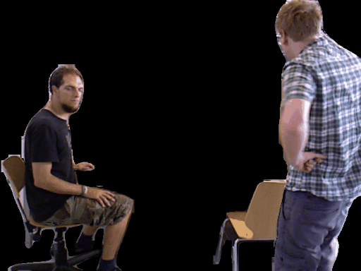
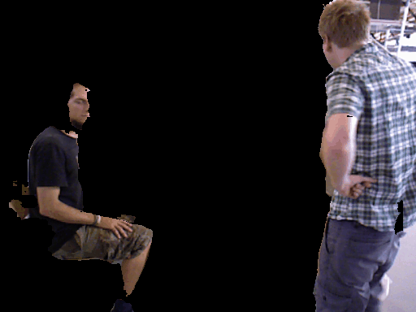
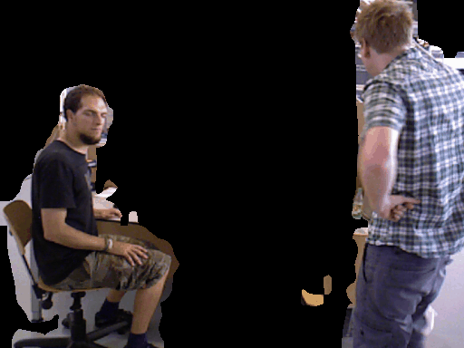
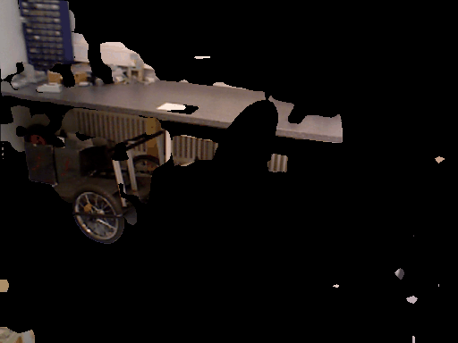
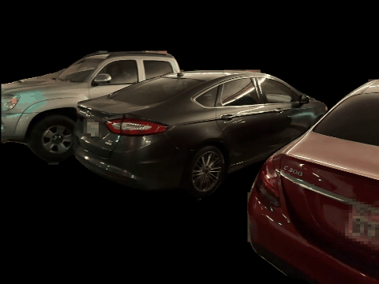

Abstract
Combining 3D Gaussian splatting with Simultaneous Localization and Mapping (SLAM) has gained popularity as it enables continuous 3D environment reconstruction during motion. However, existing methods struggle in dynamic environments, particularly moving objects complicate 3D reconstruction and, in turn, hinder reliable tracking. The emergence of 4D reconstruction, especially 4D Gaussian splatting, offers a promising direction for addressing these challenges, yet its potential for 4D-aware SLAM remains largely underexplored. Along this direction, we propose a robust and efficient framework, namely Reweighting Uncertainty in Gaussian Splatting SLAM (RU4D-SLAM) for 4D scene reconstruction, that introduces temporal factors into spatial 3D representation while incorporating uncertainty-aware perception of scene changes, blurred image synthesis, and dynamic scene reconstruction. We enhance dynamic scene representation by integrating motion blur rendering, and improve uncertainty-aware tracking by extending per-pixel uncertainty modeling, which is originally designed for static scenarios, to handle blurred images. Furthermore, we propose a semantic-guided reweighting mechanism for per-pixel uncertainty estimation in dynamic scenes, and introduce a learnable opacity weight to support adaptive 4D mapping. Extensive experiments on standard benchmarks demonstrate that our method substantially outperforms state-of-the-art approaches in both trajectory accuracy and 4D scene reconstruction, particularly in dynamic environments with moving objects and low-quality inputs.
Results
Impact of IR


Dynamic Masks








4D Rendering
BibTeX
@article{zhao2026ru4d,
title={RU4D-SLAM: Reweighting Uncertainty in Gaussian Splatting SLAM for 4D Scene Reconstruction},
author={Zhao, Yangfan and Zhang, Hanwei and Huang, Ke and Wang, Qiufeng and Shao, Zhenzhou and Wu, Dengyu},
journal={arXiv preprint arXiv:2602.20807},
year={2026},
url={https://arxiv.org/abs/2602.20807},
}